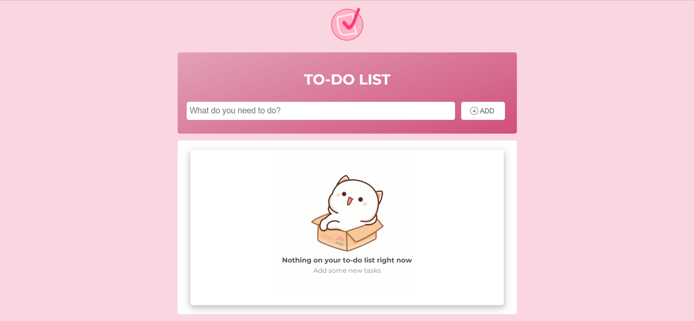

my projects
To-Do List
HTML, CSS, JavaScript(jQuery)
Designed with productivity in mind, this task management app provides a responsive interface for creating and organizing to-do items dynamically.


Features include real-time task addition and removal, task completion tracking with visual indicators, form validation, and a responsive UI powered by HTML, CSS, JavaScript (jQuery), PHP, and MySQL.
Project Information
July 25, 2024
A group project made for the subject DCIT50A - Object Oriented Programming.
Team Members & Roles:
- Vanessa Andino | Frontend Developer
- Christina Gomba | Backend Developer
- Roselyn Llantos | Project Documenter